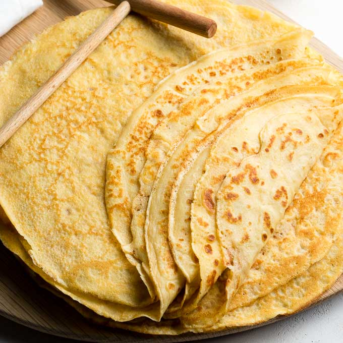

Basic Crêpes

Description
This simple but delicious crêpe recipe can be made in minutes from
ingredients that everyone has on hand.
Ingredients
- 1 cup all-purpose flour
- 2 large eggs
- ½ cup milk
- ½ cup water
- ¼ teaspoon salt
- 2 tablespoons butter, melted
Steps
-
Whisk flour and eggs together in a large mixing bowl; gradually add in
milk and water, stirring to combine. Add salt and melted butter; beat
until smooth.
-
Heat a lightly oiled griddle or frying pan over medium-high heat. Pour
or scoop the batter onto the griddle, using approximately 1/4 cup for
each crêpe. Tilt the pan with a circular motion so that the batter coats
the surface evenly.
-
Cook until the top of the crêpe is no longer wet and the bottom has
turned light brown, 1 to 2 minutes. Run a spatula around the edge of the
skillet to loosen the crêpe; flip and cook until the other side has
turned light brown, about 1 minute more. Serve hot.